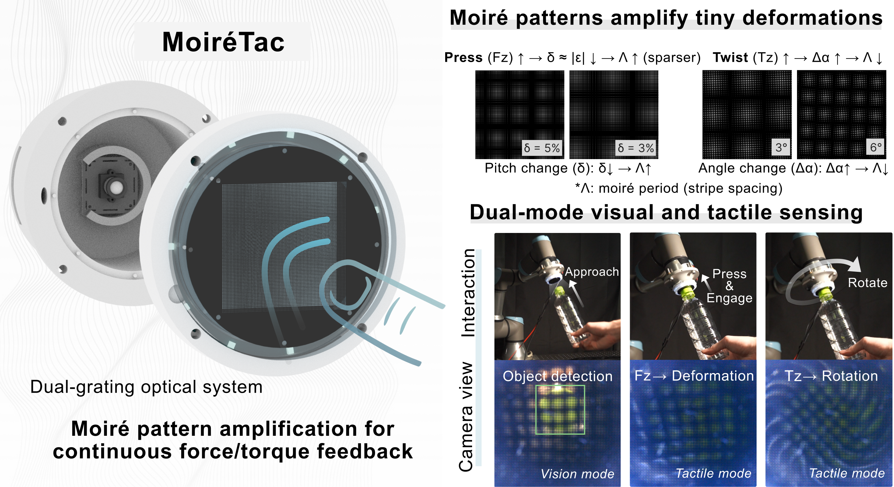

Key Contributions
- Moiré interferometry for visuotactile sensing: We apply moiré pattern amplification to transform marker-based sensing into continuous interference fields, achieving R²>0.98 across six force/torque axes. Unlike sparse marker methods that interpolate between discrete points, our continuous fields directly encode mechanical deformations at every pixel.
- Physics-grounded force/torque framework: We establish analytical mappings from four moiré observables (I, ∇φ, θ, Λ) to six-axis wrench, enabling sensitivity adjustment through geometric parameters. This interpretable approach permits analytical sensitivity analysis and systematic calibration transfer, capabilities absent in pure learning-based methods.
- Transparent dual-mode operation: We maintain optical transparency for object recognition while measuring forces, demonstrated in automated cap removal tasks. The preserved visual channel operates concurrently with tactile sensing, unlike opaque sensors that lose visual information upon contact.
Overview
Overview of MoiréTac. The dual-grating optical system generates moiré observables, which are mapped to force/torque measurements. The top-left panels show how press and rotation affect stripe density and orientation.
Structure Illustration
Structure illustration showing mapping from Moiré observables (intensity I, phase ∇φ, angle θ, wavelength Λ) to six-axis force/torque sensing with the layered architecture and cross-section view.
Sensor Fabrication

Fabrication process of MoiréTac sensor showing assembly steps from optical base assembly to sensing layer completion and final integration.
System Workflow
Overview of the MoiréTac processing pipeline with dual-mode operation for vision and tactile sensing.
Six-Axis Force/Torque Calibration
Six-axis force/torque calibration results demonstrating high accuracy (R²>0.98) across all axes with experimental setup using robotic arm and commercial F/T reference sensor.
Dual-Mode Manipulation Demonstration

Hand-assisted cap removal demonstrating dual-mode operation with vision-guided approach, force feedback for grip, torque monitoring during rotation, and visual verification upon completion.